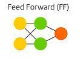
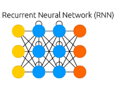
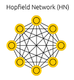
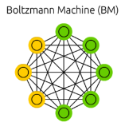

Lecture 2: Perceptrons
This lecture covers the Perceptron convergence algorithm.
A Perceptron is a primitive, neural network, but Hinton points out that they are still useful under the right condition.
For task that have very big feature vectors
Lecture 2a: Types of neural network architectures
Feed-forward neural networks
{kind=link}
- Feed forward networks are the subject of the first half of the course.
- These are the most common type of neural network.
- The first layer is the input and
- The last layer is the output.
- If there is more than one hidden layer, we call them “deep” neural networks.
- They compute a series of transformations that change the similarities between cases.
- The activities of the neurons in each layer are a non-linear function of the activities in the layer below.
Recurrent networks
{kind=link}
- These have directed cycles in their connection graph.
- That means you can sometimes get back to where you started by following the arrows.
- They can have complicated dynamics and this can make them very difficult to train. – There is a lot of interest at present in finding efficient ways of training recurrent nets.
- They are more biologically realistic.
Recurrent neural networks for modeling sequences
{kind=link}
- Recurrent neural networks are a very natural way to model sequential data:
- They are equivalent to very deep nets with one hidden layer per time slice.
- Except that they use the same weights at every time slice and they get input at every time slice.
- They have the ability to remember information in their hidden state for a long time.
- But its very hard to train them to use this potential
An example of what RNNs can now do
- In (Sutskever, Martens, and Hinton 2011) the authors trained a special type of RNN to predict the next character in a sequence.
- After training for a long time on a string of half a billion characters from English Wikipedia, he got it to generate new text.
- It generates by predicting the probability distribution for the next character and then sampling a character from this distribution.
- The next slide shows an example of the kind of text it generates. Notice how much it knows!
Sample text generated one character at a time by Ilya Sutskever’s RNN
In 1974 Northern Denver had been overshadowed by CNL, and several Irish intelligence agencies in the Mediterranean region. However, on the Victoria, Kings Hebrew stated that Charles decided to escape during an alliance. The mansion house was completed in 1882, the second in its bridge are omitted, while closing is the proton reticulum composed below it aims, such that it is the blurring of appearing on any well-paid type of box printer.
Symmetrically connected networks
- These are like recurrent networks, but the connections between units are symmetrical (they have the same weight in both directions).
- John Hopfield (and others) realized that symmetric networks are much easier to analyze than recurrent networks. – They are also more restricted in what they can do. because they obey an energy function.
- For example, they cannot model cycles.
- John Hopfield (and others) realized that symmetric networks are much easier to analyze than recurrent networks. – They are also more restricted in what they can do. because they obey an energy function.
- In (Hopfield 1982), the author introduced symmetrically connected nets without hidden units that are now called Hopfield networks.
Summary of Networks Architectures
| Schematic | Description |
|---|---|
|  | Feed forward nets - regression and classication for images and tabular data. |
|  | Recurrent nets - sequence to sequence |
|  | Hopfield nets - associative memory using symmetric nets with no hidden units |
|  | Boltzmann machines - symmetric nets with hidden units |
credit: images from The Neural Network Zoo
Lecture 2b: Perceptrons: The first generation of neural networks

- why the bias can be implemented as a special input unit?
- biases can be treated using weights using an input that is always one.
- a threshold is equivalent to having a negative bias.
- we can avoid having to figure out a separate learning rule for the bias by using a trick:
- A bias is exactly equivalent to a weight on an extra input line that always has an activation of 1.
The Perceptron convergence procedure: Training binary output neurons as classifiers
code and image from: Implementing the Perceptron Algorithm in Python In english:
- Add an extra component with value 1 to each input vector. The “bias” weight on this component is minus the threshold. Now we can forget the threshold.
- Pick training cases using any policy that ensures that every training case will keep getting picked.
- If the output unit is correct, leave its weights alone.
- If the output unit incorrectly outputs a zero, add the input vector to the weight vector.
- If the output unit incorrectly outputs a 1, subtract the input vector from the weight vector. This is guaranteed to find a set of weights that gets the right answer for all the training cases if any such set exists. a full implementation of a perceptrons:
def perceptron(X, y, lr, epochs):
'''
X: inputs
y: labels
lr: learning rate
epochs: Number of iterations
m: number of training examples
n: number of features
'''
m, n = X.shape
# Initializing parapeters(theta) to zeros.
# +1 in n+1 for the bias term.
theta = np.zeros((n+1,1))
# list with misclassification count per iteration.
n_miss_list = []
# Training.
for epoch in range(epochs):
# variable to store misclassified.
n_miss = 0
# looping for every example.
for idx, x_i in enumerate(X):
# Inserting 1 for bias, X0 = 1.
x_i = np.insert(x_i, 0, 1).reshape(-1,1)
# Calculating prediction/hypothesis.
y_hat = step_func(np.dot(x_i.T, theta))
# Updating if the example is misclassified.
if (np.squeeze(y_hat) - y[idx]) != 0:
theta += lr*((y[idx] - y_hat)*x_i)
# Incrementing by 1.
n_miss += 1
# Appending number of misclassified examples
# at every iteration.
n_miss_list.append(n_miss)
return theta, n_miss_listLecture 2c: A geometrical view of perceptrons
Geometry review
- A point (a.k.a. location) and an arrow from the origin to that point, are often used interchangeably.
- A hyperplane is the high-dimensional equivalent of a plane in 3-D.
- The scalar product or inner product between two vectors
- sum of element-wise products.
- The scalar product between two vectors that have an angle of less than 90 degrees between them is positive.
- For more than 90 degrees it’s negative.
Weight-space

- Has one dimension per weight.
- A point in the space represents a particular setting of all the weights.
- Assuming that we have eliminated the threshold, each training case can be represented as a hyperplane through the origin.
- The weights must lie on one side of this hyperplane to get the answer correct.
- Each training case defines a plane (shown as a black line)
- The plane goes through the origin and is perpendicular to the input vector.
- On one side of the plane the output is wrong because the scalar product of the weight vector with the input vector has the wrong sign.
Lecture 2d: Why the learning works ?
We look at the geometrical interpretation which is the proof for the convergence of the Perceptron learning algorithm works. We are trying to find a decision surface by solving a convex optimization problem. The surface is a hyperplane represented by a line where on side is the correct set and the other is incorrect. The weight vectors form a cone: - This means that wights are closed under addition and positive scaler product. - At zero it is zero.
The cone of feasible solutions

To get all training cases right we need to find a point on the right side of all the planes. But there may not be any such point! If there are any weight vectors that get the right answer for all cases, they lie in a hyper-cone with its apex at the origin.
- The average of two good weight vectors is a good weight vector.
- The problem is convex.
Two training case form two hyper planes (shown in black). the good weights lie between them average of good weights is good.
Geometry of learning using weight space:
- it has one dimension per weight (vertex in the graph).
- a point in the space represents a particular setting of all the weights.
- each training case (once we eliminate the threshold/bias) is a hyper plane through the origin
- once the threshold is eliminated each training case can be represented as a hyper place through the origin
- the weight must lie on one side of this place to get the answer correct .
Caveats:
- convergence depends on the picking the right features
- deep nets don’t use this procedure - as it only converges for single layer Perceptrons - but for more than one layer sum of a solution is not necessarily also a solution.
Lecture 2e: What Perceptrons can’t do
- This story motivates the need for more powerful networks.
- These ideas will be important in future lectures, when we’re working on moving beyond these limitations.
References
Reuse
Citation
@online{bochman2017,
author = {Bochman, Oren},
title = {Deep {Neural} {Networks} - {Notes} for {Lesson} 2},
date = {2017-07-16},
url = {https://orenbochman.github.io//notes/dnn/dnn-02/l02_.html},
langid = {en}
}